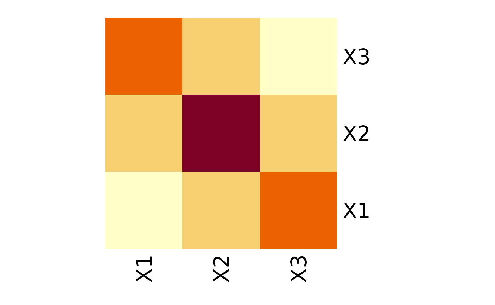
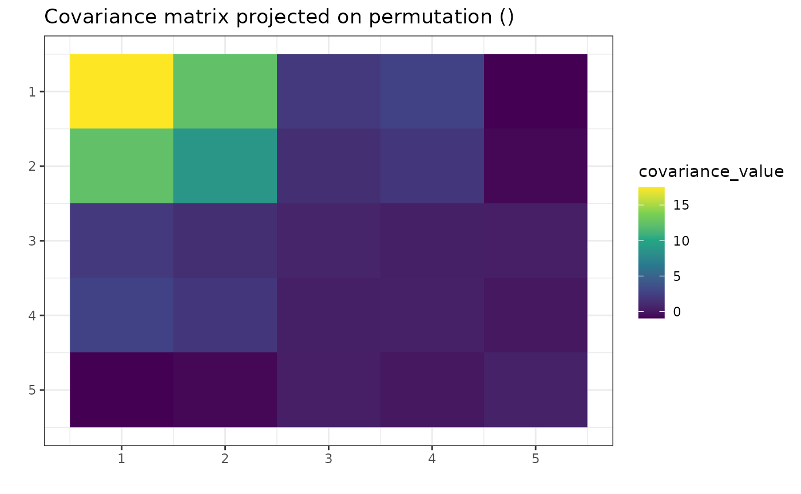
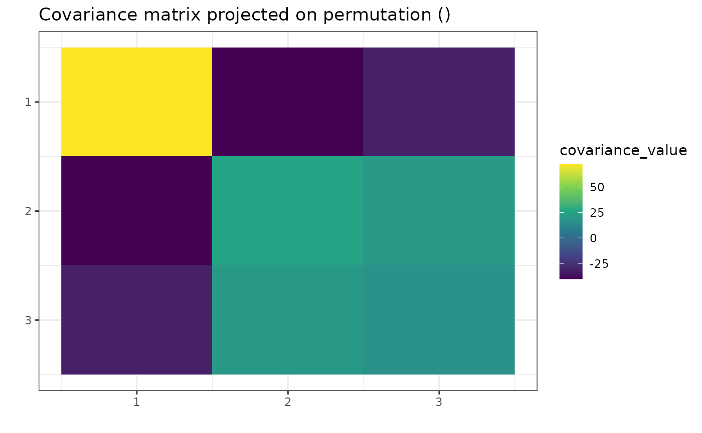

The problem
Quite often, we have too little data to perform valid inference. Consider the situation with multivariate Gaussian distribution, where we have few observations compared to the number of variables. For example, that’s the case for graphical models used in biology or medicine. In such a setting, the usual way of finding the covariance matrix (the maximum likelihood method) isn’t statistically applicable. What now?
Invariance by permutation
In some cases, the interchange of variables in the vector does not change its distribution. In the multivariate Gaussian case, it would mean that they have the same variances and covariances with other respective variables. For instance, in the following covariance matrix, variables X1 and X3 are interchangeable, meaning that vectors (X1, X2, X3) and (X3, X2, X1) have the same distribution.

Now, we can state this interchangeability property in terms of permutations. In our case, the distribution of (X1, X2, X3) is invariant by permutation (, ), or in cyclic form . This is equivalent to saying that swapping the first with the third row and then swapping the first and third columns of the covariance matrix results in the same matrix. Then we say that this covariance matrix is invariant by permutation.
Of course, in the samples collected in the real world, no perfect equalities will be observed. Still, if the respective values in the (poorly) estimated covariance matrix were close, adopting a particular assumption about invariance by permutation would be a reasonable step.
Package gips
We propose creating a set of constraints on the covariance matrix to use the maximum likelihood method. The constraint we consider is - none other than - invariance under permutation symmetry.
This package provides a way to find a reasonable permutation
to be used as a constraint in covariance matrix estimation. In this
case, reasonable means maximizing the Bayesian posterior
distribution when using a Wishart-like distribution on symmetric,
positive definite matrices as a prior. The idea, exact formulas, and
algorithm sketch are explored in another vignette that can be accessed
by vignette("Theory") or on its pkgdown
page.
Example
library(gips)
toy_example_data
#> [,1] [,2] [,3] [,4] [,5]
#> [1,] -11.886380 4.753934 1.092400 -7.191882 -10.511253
#> [2,] -8.064560 7.955955 1.669257 -6.948952 -10.521423
#> [3,] -5.776251 9.079530 3.139842 -5.992006 -9.517660
#> [4,] -15.261303 2.611751 1.976991 -7.597607 -9.065878
dim(toy_example_data)
#> [1] 4 5
number_of_observations <- nrow(toy_example_data) # 4
perm_size <- ncol(toy_example_data) # 5
S <- cov(toy_example_data)
sum(eigen(S)$values > 0.00000001)
#> [1] 3Note that the rank of the S matrix is 3, despite the
number_of_observations being 4. This is because
cov() estimated the mean on every column to compute
S.
We want to find reasonable additional assumptions on S
to make it easier to estimate.

Looking at the plot, one can see the similarities between columns 3, 4, and 5. They have similar variance and covariance to each other. The 3 and 5 have similar covariance with columns 1 and 2. However, the 4 is not far from them.
Let’s see if gips will find the relationship:
g_map <- find_MAP(g, optimizer = "brute_force",
return_probabilities = TRUE, save_all_perms = TRUE)
#> ================================================================================
#> ================================================================================
#> Warning: The found permutation has n0 = 5 which is bigger than the number_of_observations = 4.
#> ℹ The covariance matrix invariant under the found permutation does not have the likelihood properly defined.
#> ℹ For more in-depth explanation, see 'Project Matrix - Equation (6)' section in `vignette('Theory', package = 'gips')` or its pkgdown page: https://przechoj.github.io/gips/articles/Theory.html.
plot(g_map, type = "heatmap")gips decided that
was the most reasonable assumption. Let’s see how much better it is:
g_map
#> The permutation (3,4)
#> - was found after 120 log_posteriori calculations
#> - is 3.79207316417081 times more likely than the starting, () permutation.This assumption is over two times more believable than making no assumption. Let’s examine how reasonable are other possible assumptions:
get_probabilities_from_gips(g_map)
#> () (4,5) (3,4) (3,4,5) (3,5)
#> 0.069068384307 0.060727414839 0.261912366623 0.197438701138 0.086934032936
#> (2,3) (2,3)(4,5) (2,3,4) (2,3,4,5) (2,3,5,4)
#> 0.002520241430 0.006495999997 0.001182043961 0.000080031096 0.000234494736
#> (2,3,5) (2,4) (2,4,5) (2,4)(3,5) (2,4,3,5)
#> 0.000410499786 0.002137051762 0.000410407100 0.004843578288 0.000065540223
#> (2,5) (2,5)(3,4) (1,2) (1,2)(4,5) (1,2)(3,4)
#> 0.001009443542 0.001421639262 0.019092314439 0.033265194830 0.055875021388
#> (1,2)(3,4,5) (1,2)(3,5) (1,2,3) (1,2,3)(4,5) (1,2,3,4)
#> 0.071376121642 0.057369194387 0.000213901332 0.000256492936 0.000100763693
#> (1,2,3,4,5) (1,2,3,5,4) (1,2,3,5) (1,2,4,3) (1,2,4,5,3)
#> 0.000005822908 0.000327661509 0.000176796343 0.000052885180 0.000211582316
#> (1,2,4) (1,2,4,5) (1,2,4)(3,5) (1,2,4,3,5) (1,2,5,4,3)
#> 0.000091830785 0.000011635176 0.000143967951 0.000009848927 0.000009992229
#> (1,2,5,3) (1,2,5,4) (1,2,5) (1,2,5,3,4) (1,2,5)(3,4)
#> 0.003827744236 0.000300980514 0.000113543776 0.000025464602 0.000506120822
#> (1,3) (1,3)(4,5) (1,3,4) (1,3,4,5) (1,3,5,4)
#> 0.000622993877 0.001543477661 0.000058544101 0.000002108636 0.000004421858
#> (1,3,5) (1,3)(2,4) (1,3)(2,4,5) (1,3,2,4) (1,3,5)(2,4)
#> 0.000101638418 0.000995784985 0.000032602399 0.000478312732 0.000004978116
#> (1,3)(2,5) (1,3,2,5) (1,3,4)(2,5) (1,4) (1,4,5)
#> 0.026206794910 0.005021800273 0.000010645580 0.000206209778 0.000047628153
#> (1,4)(3,5) (1,4,3,5) (1,4)(2,3) (1,4,5)(2,3) (1,4)(2,3,5)
#> 0.000409718620 0.000001927521 0.000365234206 0.000017712903 0.000002866249
#> (1,4)(2,5) (1,4,2,5) (1,5) (1,5)(3,4) (1,5)(2,3)
#> 0.000501465259 0.000237282418 0.000629620291 0.000683780081 0.020299482408
#> (1,5)(2,3,4) (1,5)(2,4)
#> 0.000081562806 0.001174652814We see that assumption is the most likely with posterior probability. However, the assumption is also reasonable, with a posterior probability of . So it is up to us to decide which one to choose.
Remember that with the assumption
,
the n0 will be 4, which would be insufficient for us to
estimate covariance correctly. The assumption
will be just right:
S_projected <- project_matrix(S, g_map[[1]])
sum(eigen(S_projected)$values > 0.00000001)
#> [1] 4Now, the estimated covariance matrix is of full rank (5).
Practical example
Let’s examine 12 books’ thick, height, and breadth data:
library(gips)
Z <-DAAG::oddbooks[,c(1,2,3)]
number_of_observations <- nrow(Z) # 12
p <- ncol(Z) # 3
S <- cov(Z)
S
#> thick height breadth
#> thick 72.69697 -40.33485 -31.74242
#> height -40.33485 25.36992 20.58576
#> breadth -31.74242 20.58576 17.18424
g <- gips(S, number_of_observations, D_matrix=diag(p)) # the default D_matrix
plot(g, type = "heatmap")
We can see similarities between columns 2 and 3, representing the book’s height and breadth. In particular, the covariance between [1,2] is very similar to [1,3], and the variance if [2] is similar to the variance of [3]. Those are not surprising, given the interpretation of the data.
g_map <- find_MAP(g, optimizer = "brute_force",
return_probabilities = TRUE, save_all_perms = TRUE)
#> ================================================================================
#> ================================================================================
g_map
#> The permutation ()
#> - was found after 6 log_posteriori calculations
#> - is 1 times more likely than the starting, () permutation.
get_probabilities_from_gips(g_map)
#> () (2,3) (1,2)
#> 0.917699644399123216 0.082300333638115772 0.000000000064309861
#> (1,2,3) (1,3)
#> 0.000000021892918704 0.000000000005532453We see the search was too restrictive and did not find the
permutation. We will weaken the restrictions by changing the
D_matrix parameter.
g <- gips(S, number_of_observations, D_matrix=0.05*diag(p))
g_map <- find_MAP(g, optimizer = "brute_force",
return_probabilities = TRUE, save_all_perms = TRUE)
#> ================================================================================
#> ================================================================================
g_map
#> The permutation (2,3)
#> - was found after 6 log_posteriori calculations
#> - is 3.5796631131816 times more likely than the starting, () permutation.
get_probabilities_from_gips(g_map)
#> () (2,3) (1,2) (1,2,3)
#> 0.21834865211409399 0.78161461578574387 0.00000000027813589 0.00003673179839076
#> (1,3)
#> 0.00000000002363545find_MAP found the symmetry represented by permutation
(2,3). The result depends on two input parameters, delta
and D_matrix. By default they are set to 3 and
diag(p), respectively.
The method is not scale-invariant and therefore we recommend to run
gips for different values of D_matrix (typically, of the
form C * diag(p)).
Further reading
- To learn more about the available optimizers in
find_MAP()and how to use those, seevignette("Optimizers")or its pkgdown page. - To learn more about the math and theory behind the
gipspackage, seevignette("Theory")or its pkgdown page.